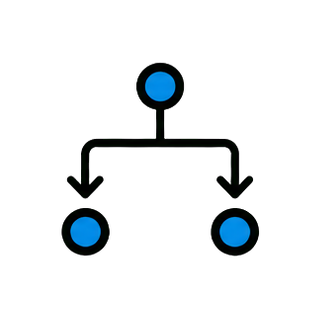
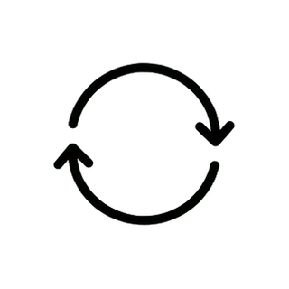
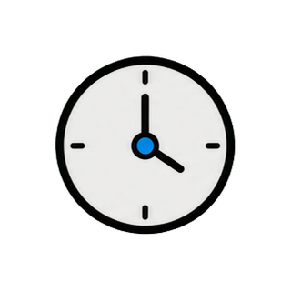
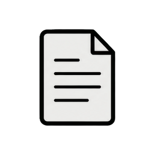
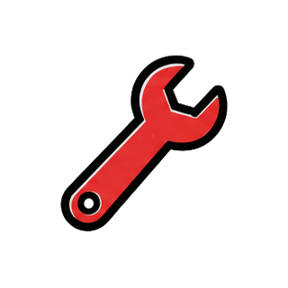
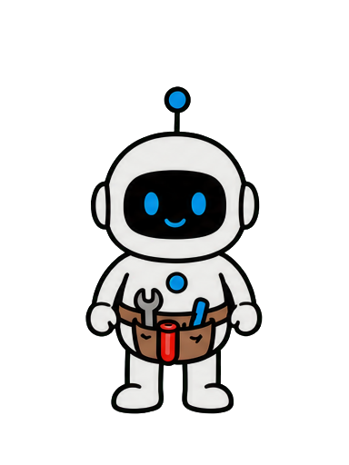

Tiny Agent
构建有效 Agent
20 秒主题样片

先做复杂架构？


复杂 ≠ 更有效
复杂架构

简单组合



很多团队做 Agent 的第一步，
就是选框架、画多 Agent 架构，再让几个模型互相讨论。
但 Anthropic 在参与大量真实项目后发现，效果最好的系统，
往往使用的是更简单、更清晰、更容易组合的模式。
真正决定系统质量的，通常不是 Agent 的数量，
而是任务边界、评价标准和环境反馈是否清楚。